This pages does not include modern "eyewitness accounts". Many of these have been presented in "The Ark on Ararat"; Tim LaHaye & John Morris, 1976
Complete with an arrangement of how the space might have been filled. Note the prismic hull and full sized 3rd (upper) deck. Proportions are poor considering the dimensions are explicitly stated (Gen 6:15), and reflect the short squat hulls of 15th century ship design.
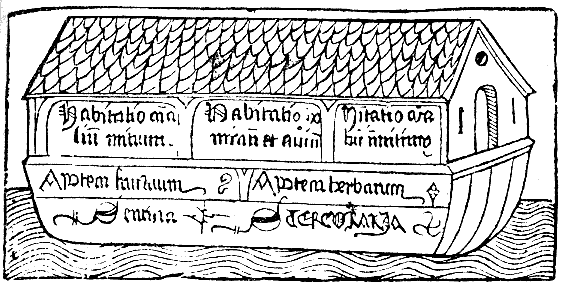
Medieval representation of the building of the Ark from H. Schedel's so named "World Chronicle", 1493 (The untitled work also became known as the Nuremburg Chronicle). The obvious influences of the ships of 1493 are obvious, and the proportions are far from Biblical. As for scale - perhaps we can assume perspective was a problem for artists at this time. (Large image)
One of the best preserved examples of early printed Bible artwork. Illustrations were overseen by Michael Wohlgemut (1434-1519) and his stepson Wilhelm Pleydenwurff (c. 1450-1494). From Morse Library, Beloit College
German Bible printed in Nuremberg (colored plate). Note that Johannes Gutenberg built the first metal type press in 1436, and the Gutenburg bible came out in 1455. Before this time printing was done from engravings on wood. Illustrations, of course, were still being engraved centuries later.
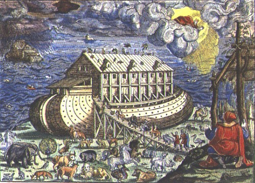
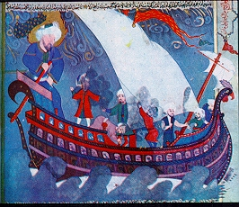
"Noah's ark is caught in the thunderstorm and the heavy rain that will flood the earth. One of the masts in the ship is bent from the strong wind and Noah's sons are shown moving to and fro with anxiety trying to control the sails. Noah has calmly grabbed the rudder. The ark is represented as a sixteenth century Ottoman ship very similar to images found in illustrations of the Ottoman fleet in historical miniatures of the time. On the other hand in accordance with its Biblical description, it has two (sic) stories, through the windows of which pairs of animals can be observed. The text of the Zubdat-al Tawarikh states that the number of Noah's sons varies in source. The artist here has chosen to represent the prophet with seven sons and to interpret the story of the deluge as the common adventure of any ship caught in a storm." Assoc. Prof. Dr. G’nsel Renda, Hacettepe University, ANKARA. http://www.ee.bilkent.edu.tr/~history/Ext/Zubdat.htmlNote: The Quran does not give dimensions for Noah's Ark. Noah loses a son (11:42-43) and possibly his wife also. (66:10). Compare Bible and Quran: http://www.christiananswers.net/q-aig/quran-genesis.html
Peter Jansen, a Dutch shipbuilder, built his ships along lines he laid down after studying the Bible narrative. He began with a large scale model of the ark demonstrating its effective design and proportions. The result was a ship with more cargo space and less wind and water resistance than its ungainly predecessors. The lines of our modern freighters reinforce the 'discoveries' Jansen made by studying the Genesis account.
Peter Jansen, of Noorn, Holland, then embarked on a more ambitious project. He built a vessel to the proportions of the Ark, one hundred and twenty feet long, twenty wide, and twelve high. (approx 1/4 scale). It was found to behave so steadily in the sea and to have such ample stowage in relation to its weight that a number of similar boats were built. They fell into disuse only because of the difficulty of arranging for motive power and steering - less a problem with Noah's Ark on a shore-less ocean.
German Jesuit scholar and author of more than 40 published works. Kircher was one of the preeminent European intellectuals of the seventeenth century. Inventor, composer, geographer, geologist, Egyptologist,historian, adventurer, philosopher, proprietor of one of the first public museums, physicist, mathematician, naturalist, astronomer, archaeologist. A contemporary of Newton, Boyle, Leibniz and Descartes, Kircher's rightful place in the history of science has been shrouded by his attempt to forge a unified world view out of traditional Biblical historicism and the emerging secular scientific theory of knowledge. When Rome was struck by the bubonic plague in 1656, Kircher spent days on end caring for the sick. Searching for a cure, Kircher observed microorganisms under the microscope and invented the germ theory of disease, which he outlined in his Scrutinium pestis physico-medicum (Rome 1658). As Kircher's reputation grew, so did voices of opposition. Contemporary scientists like Descartes, equating Jesuitical science with the oppressive Inquisition that had so recently executed Giordano Bruno and imprisoned Gallileo for their unorthodox theories, regarded Kircher's work with suspicion.
Marion Leathers Kuntz, " Guillaume Postel and the Syriac Gospels of Athanasius Kircher", Renaissance Quarterly 40 (1987) 465-484
Kircher came up with an ark very similar to modern creationist designs. Note the rectilinear hull shape, low pitched roof, 3 distinct levels, and even an elevated keel on piers. This is one of the first illustrations conveying the correct proportions and scale (disregarding the birds). Today, a second level doorway and a continuous upper window is considered to be a more accurate interpretation. (Gen 6:16)
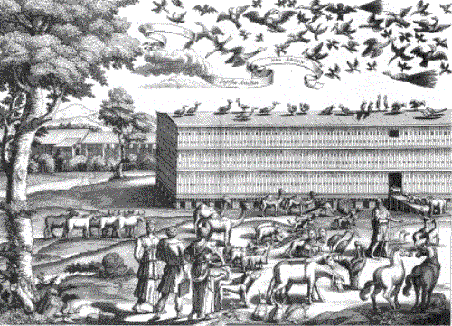
Kircher's interior concept utilized a central corridor and distributes the animals and food for a low center of mass, yet minimal handling. The image below shows birds on the top level, food in the center and large animals on the lowest deck.
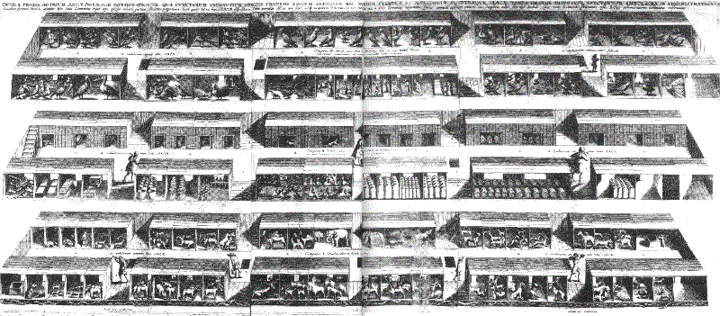
With more thought on the Genesis text, Kircher attempted a map of the pre-flood (ante-diluvian) world. An interesting mix of known geography of the Mesopotamian valley and some speculation. Also depicted are the mountains of Ararat (Armenia) with the Tower of Babel to its west. (Gen 11:2. They moved to (or from) the east). Of course, this implies the ark landed in the Zagros mountains (Iran) instead of the northerly Turkish Mt Ararat - but no time for that here.
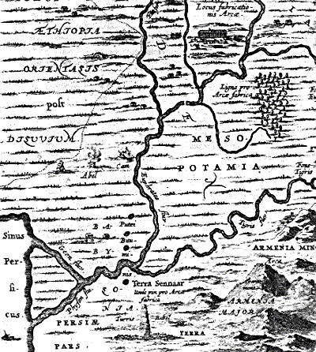
1694 A reproduction of the BIblical 300 x 50 x 30 cubit ark by Scottish merchant Livern demonstrating the vessel's stability.
Published in Protestant Germany, this etching is obviously influenced by the earlier work of Kircher - a Catholic. If not an original Kircher illustration, then this artist has definitely been borrowing Kircher's ideas - rectangular form, elevated on piers with similar roof slope and wall detailing. The obvious give-away is the position of entry door and window seen at the middle of the side wall. Animal housing constructed on the lowest deck is also similar to Kircher's design. Excellent interpretations such as substantial vertical ribs in the hull walls, multiple layered decking, construction ramps, scaffolding, cranes, a big workforce and timber processing are all evident.
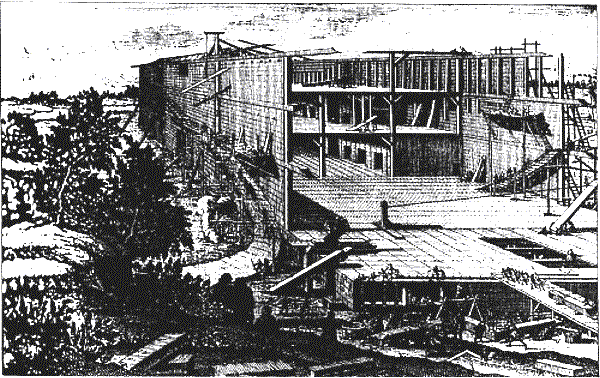
Image reproduced from Fundamentum Prof. Dr. Werner Gitt ISSN 1013-994X
Checking the scale. The figure standing at the near corner of the ark provides a convenient estimate. According to this picture, the tallest man in the group is approximately 1/16th of the height of the ark, 30 cubits. Assuming he stands only 1.6m tall, the wall of the ark is 25.6m high. This defines a very long cubit of 850mm (33.4"). This ark is drawn to a scale much larger then the English 457mm (18") cubit or even the Royal Egyptian cubit of 524mm (20.6"). The Prussian cubit of 667mm (26.3") may have been used by the German artist - but somewhat exaggerated. This depiction is therefore definitely oversize - a rare error in the history of Noah's Ark illustration.
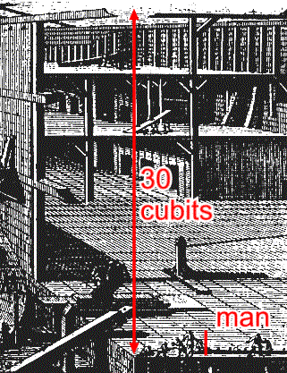
Illustrated by Gerard Hoet (http://www.getty.edu/art/collections/bio/a199-1.html), and others.
Published by P. de Hondt in The Hague (La Haye). (http://www.mythfolklore.net/lahaye/">http://www.mythfolklore.net/lahaye/)
Hoet died in 1733, only five years after this work was published. Gerard Hoet was a Dutch painter, draftsman, and writer, born on 22 August 1648. His father (Moses) was a glass painter. He founded a drawing academy in Utrecht in 1697. From 1714 Hoet resided in The Hague. He depicted mainly religous, mythological or Classical subjects set in landscapes. His book on drawing was published in 1712. Hoet also designed many illustrations for bibles.
The following image of the ark under construction shows evidence of Kircher's influence. For example, the door is on the bottom level with small window directly above it. (http://www.mythfolklore.net/lahaye/008/index.html). The ante-diluvians look somewhat Romanesque, which is as good a guess as any. Not a lot of workmen on the site, unless this is the lunch break. Going to be fun for Noah luring them back to work. Could do with a lot more construction stuff around.
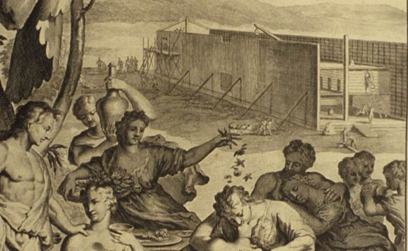
Image courtesy History of Science Collections, University of Oklahoma Libraries.
This next image shows the animals disembarking while Noah worships God. Notice the exposed roof beams (Noah removed the covering of the ark. Gen 8:13), but the animals exit via the door. This is a reasonable interpretation, the removal of the covering may have served to light up the ark and increase the airflow to get the animals primed. See Getting Out. This is certainly more logical than having everyone (http://www.genesisfiles.com/Images/elfred3.jpg") clamber out the roof. Of course, the sun should be behind us to see the rainbow, although Noah's face is almost lit that way. Is that a vulture on the alter? Hope not.
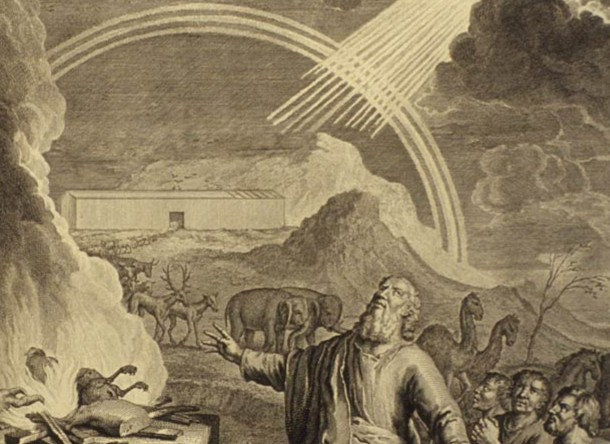
Image courtesy History of Science Collections, University of Oklahoma Libraries.
(However, Hoet's depictions of Pharoah's court (http://www.mythfolklore.net/lahaye/049/index.html) were not particularly Egyptian. No doubt Kircher could have done better there. Interestingly, the serpents have the dragon or dinosaur look.)
Amazingly, for the next few centuries Noah's Ark was not taken very seriously it seems. In any case, Kircher's work remained unsurpassed until the modern Creationist movement. In most illustrations during this period, the ark did not even match the explicit Biblical dimensions.
Vogt, Naval Architect, Denmark 1904
A large model built in Denmark, thirty feet long, five feet wide, and three feet high. Triangular in section with a flat base and ridge at the top. Tests carried out in the Baltic sea by the designer, a naval architect named Vogt, were reported to perform well at sea.
According to "The Biblical Flood — A Scientific Approach" the ark may have been triangular in cross section. (http://www.agsconsulting.com/menucn2b.htm">website). Photographs of a Vogt style model are shown at (http://www.agsconsulting.com/menucn2.htm">http://www.agsconsulting.com/menucn2.htm)
The website includes this quote from a Copenhagen newspaper, Dagbladet, of 31st August, 1904; "The Royal Shipbuilding yard has recently completed the construction of a remarkable vessel. It is 30 feet long, 5 feet wide, and 3 feet high, and with its slanting sides most resembles the roof of a house. It is a new Noah's Ark, constructed after the design of Mr. Vogt, the engineer, the Carlsburg Fund bearing the expense of its production...The remarkable thing about the Bible measurements is that after thousands of years' experience in the art of shipbuilding they must be confessed to be still the ideal proportions for the construction of a big ship...the Ark was not intended to sail, but to lie still on the water, and to give the best and quietest condition for the comfort of its inhabitants, and this is ensured by means of the triangular shape. In a storm the motion of the Ark would be reduced to a minimum...If the greatest living engineer in the world was given such a commission as this, to construct as large and strong a vessel as to lie still upon the sea, and as simply constructed as the Ark, he could not make a better vessel." According to another Copenhagen newspaper, Donnebrag, the vessel "drifted sideways with the tide, creating a belt of calm water to leeward, and the test proved conclusively that a vessel of this primitive make might be perfectly seaworthy for a long voyage."
"Quiet conditions" might be the only thing in its favor, because a typical rectangular cross-section has about 15 times the stability of a triangular one (Both hulls assuming a realistic specific mass of 0.5 and a center of gravity at 40% from the bottom. There is a 50% reduction in capacity due to the the triangular shape, without accounting for the difficulty utilizing the awkward spaces caused by the sloping walls.) The stability curve shows that tilting beyond an angle of 62 degrees will cause the triangular hull to capsize and remain in the (more stable) inverted position. Flawed as it may be, at least the study shows some concern for the structural strength of Noah's Ark, something not seen quite so often as roll stability studies.
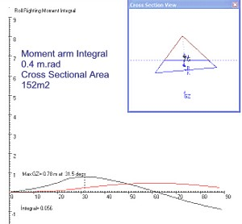
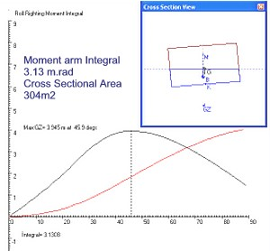
Check this yourself in 5 minutes with the Vogt hull now included in the Stability Simulator
Reported by Ya'Acov Friedler "What the Ark was Really Like" Jerusalem Post 10 Oct 1967
Friedler, a reporter for a major Israeli newspaper, describes Noah's Ark as proposed by Mr. Meir Ben-Uri. His ark is 150m (492 ft) long, weighed about 6,000 tons and had a carrying capacity of 15,000 tons. Ben-Uri, Director of the Studio for Synagogual Arts took several years to complete his study, based on the numerical values of the Hebrew words of Genesis 6:14-16. From this he prepared a scale on which he based his measurements, which led to a cubit length of 500mm (19.7 inches).
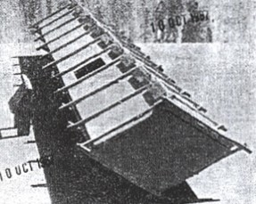
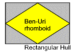
Image The Jerusalem Post 1967
The most striking aspect of Ben-Uri's ark is the rhomboid cross-section - almost a Vogt hull in appearance, but with a "V" bottom (deadrise). Ben-Uri claims a rectangular vessel would have less space inside due to the need for a "maze of supporting beams", and that the rhomboid design is more buoyant. (This is testable, the enclosed rhomboid has exactly half the area of the bounding rectangle, so the interior space is halved. Worse, the sloping sides will make inefficient use of space. There is also no reason to expect the rhomboid will have substantially less interior structure than the rectangular hull. TL)
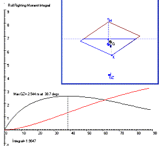
The roll stability of Ben-Uri's ark is a substantial improvement over the Vogt hull, but it is not as stable as the rectangular hull. The rhomboid design is also very sensitive to variations in draft.
Naval architect Dr Dan Khoushy commented on the design; "I would not have chosen this shape for the vessel, but I must say that it is practically optimal for the purpose;
According to Ben-Uri, the hull would be built up in identical triangular compartments, forming ten "holds" in a virtual "mass production" process. Laying the ark on one side, the roof mounted door would be accessible, but when buoyed by the floodwaters the door is in the roof. (Seems like a lot of effort walking around on sloping floors for the sake of sealing a little door. TL)
The last claims of the article refer to the cubit length being the same as for Solomon's temple, which is an interesting point, and finally that the reed basket of baby Moses may have been rhomboid also. (This assumes "tebah" refers to shape, and make the dubious assumption that Jocabed took a rhomboid basket when Egyptian reed basket were more likely rounded. See Does Ark mean Box? TL)
Straightforward studies on the roll stability of Noah's Ark, based on a rectangular block shape, a draft of 15 cubits and a cubit length of 18 inches.
A calculation based on animal types. This has been superceded by Woodmorappe's 1996 book.
Size and proportions of the ark compared to typical modern ships - showing that the proportions given in Genesis 6:15 are appropriate and realistic.
Not much added about Noah's Ark compared to the previous milestone "The Genesis Flood", but this book is perhaps even more responsible for the modern creationist movement. A verse-by-verse commentary on the book of Genesis without shying away from science, often referred to as the "Rolls Royce" of creationist books.
Collins advanced the work of Henry Morris (1971 CRSQ 8.2) by demonstrating an integrated roll moment which is a more reliable indication of roll stability. Collins also gave a hypothetical wind limit of over 200 knots (assuming no waves however, so not a practical wind limit). His ark is based on the assumptions of Morris 1971, which is approximately a rectangular box.
A big step sideways, and not very practical for a multi-deck vessel. A suggested ark design similar to a raft of balsa with lightweight (and rather fragile) superstructure housing the animals. Unfortunately the cargo was always heavier than the hull, so not sure what the motivation is for this idea.
The premier paper on the structure and seakeeping of Noah' Ark. Test data was generated by naval architects and structural engineers at the world class ship design and research center KRISO (formerly KORDI) in Korea. The comparative study focused on the Biblical proportions and demonstrated the superior choice of length, breadth and depth. Through scale model tests, computer analysis and calculations using shipping rules the capability of the Biblical ark was claimed to be structurally adequate for 30m waves. (Significant wave height). Available here.
The premier reference on the operation of Noah's Ark - especially animal related issues. Written as a refutation of arguments against the feasibility of Noah's voyage, and as a compilation of solutions for the logistics of the account. Woodmorappe deliberately makes minimal use of the "miraculous" to show the even from a materialist perspective the account is possible. See here Extensive research bibliography is very handy.
Study on the Ark's breadth to depth ratio and its relation to the amount of wood used. Does not include hull strength and other factors dealt with in Safety Investigation of Noah's Ark in a Seaway. The 1993 paper SW Hong CEN TJ 8(1)1994 (AiG) also dealt with wood usage as a factor for determining the ease of building a strong hull in different proportions.
Coffee table style picture gallery with illustrations by Bill Looney. Excellent graphic quality. Not a serious study on internal layout, structure, animal housing, food storage etc which dramatically alters what you are likely to see on board the ark.
{kind=link}
{kind=link}